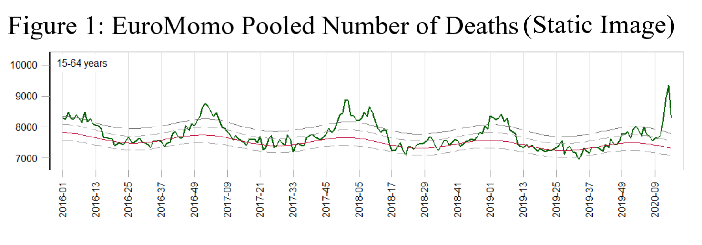
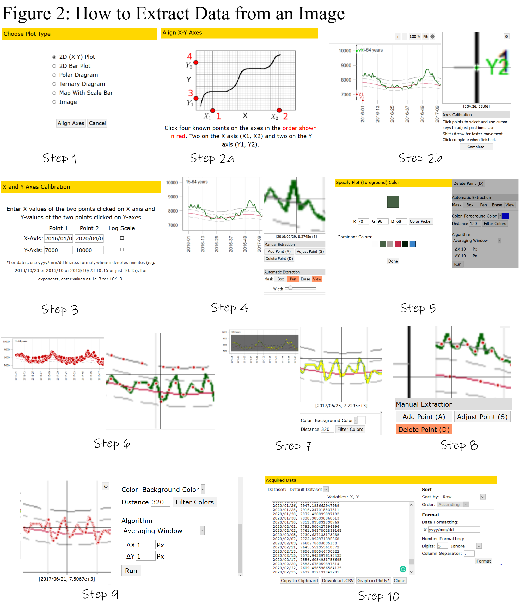

After much research, it seems that the only way to understand how many people are died from COVID-19 is to estimate excess death numbers from mortality data. Economist calculates excess death numbers for some countries, and James Tozer promised to publish the underlying data on GitHub.
{{% tweet "1250815367276003330" %}}Another important source is EuroMomo project which aims to measure the excess number of deaths related to influenza and other possible public health threats across participating European Countries. They obtain mortality data from 24 participating countries or regions. However, they don’t give raw data but only display aggregate mortality data as a figure. Shame!

Let’s learn how to obtain this data using a website called Web Plot Digitizer for quick data extraction. If you need to extract a large number of figures, then it is better to write some Python codes (e.g. to obtain data from all Google Community Mobility Reports which is also a great source for COVID-19 related research.)1
Now let’s take the figure and upload it to the Web Plot Digitizer.
Choose 2D (X-Y) Plot,
Align X-Y Axes,
Enter X & Y Axes Start and End Points,
Use Automatic Extraction by Box or Pen,2
Choose the foreground of your line,
Run the algorithm. Probably, there will be lots of incorrectly identified points at first,
Choose background color and try experimenting with distance in filter colors,3
If there is any more incorrectly identified points, delete points manually,
Choose the optimal \(\Delta\)X and \(\Delta\)Y, so that there will not be too much gap between points,
Run the algorithm and copy-paste your data.

After obtaining data and make some ggplot2 and plotly manipulations, here is the final result:
library("tidyverse")
library("plotly")
library("lubridate")
library("widgetframe")
Data <- read.csv2(file="EuroMomo.csv",header=T,sep = ",", dec = ".")
Data[,1] <- as.Date(Data[,1],format="%d/%m/%Y")
# Aggregate Duplicate Dates
Data_Clean <- Data %>%
group_by(date) %>%
summarize(Mortality = mean(Number))
# Define the ggplot
p <- Data_Clean %>%
mutate(
year = factor(year(date)), # use year to define separate curves
date = update(date, year = 1) # use a constant year for the x-axis
) %>%
ggplot(aes(date, Mortality, color = year, group=year)) +
scale_x_date(date_breaks = "1 month", date_labels = "%b") +
geom_line() + labs(x = "Months", title ="Figure 3: EuroMomo Pooled Number of Deaths <br> (15-64 Years, Interactive Image)")
# Convert it to plotly
p_plotly <- ggplotly(p, tooltip=c("Mortality"))
p_plotly <- p_plotly %>%
layout(
xaxis = list(
type = 'Weeks',
tickformat = "%U"
))
frameWidget(ggplotly(p_plotly))The reddit user, typhoidisbad shows how to do it in this link.↩
If the color of your line is distinct enough from other lines, just choose box and quickly paint all your line.↩
In this example, 320 works for me.↩